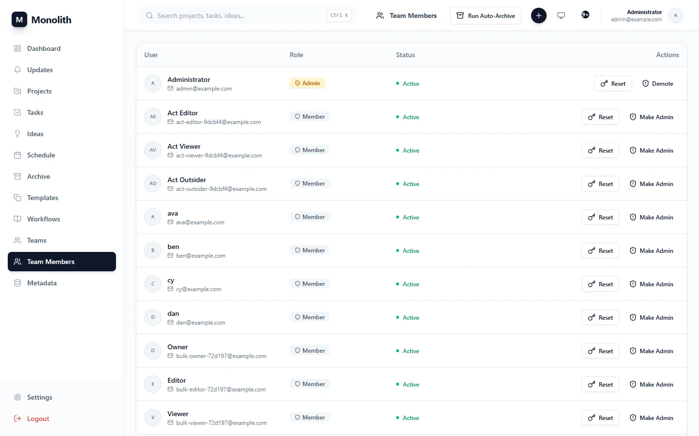

Administration
Running Monolith for a team: who gets in, how work is classified, how people organise themselves, and the operational pieces an administrator looks after.
Users and sign-up approval
Team Members (administrators only) lists every account.
- Approve requests: with
ALLOW_SIGNUP=true, people ask for an account on/register. Requests wait in the pending list; approving activates the account and e-mails a temporary password that must be changed at first sign-in (so e-mail must be enabled), rejecting deletes the request. - Promote or demote administrators, and set a new password for someone who is locked out.
- Auto-archive projects that have been Done for a week.
- Create accounts directly through the API (
POST /api/v1/users/) or the MCP toolcreate_user, as an administrator. Passwords must pass the strength rules: at leastMIN_PASSWORD_LENGTH(8) characters, at most 72 bytes, no leading or trailing spaces. - Deactivated accounts (
is_active=false) stop working at once, including their login tokens, MCP tokens and calendar link.
Login attempts are throttled: after LOGIN_MAX_FAILURES failures (5) in LOGIN_WINDOW_SECONDS (15 min) the account answers 429 for a while; other accounts are unaffected.

Topics and work types
Metadata (administrators) manages the global lists: name, colour, active flag. Topic colours tint project headers and Gantt bars. Project admins add scoped entries in Project Settings, which only that project sees, and choose which global entries the project offers. Deactivating hides an entry from pickers without touching items that use it.
Teams
Any user can create a team in Teams, add members, share co-ownership with others or make it public. Teams drive the activity feed (GET /teams/activity) and the owners' weekly team report; they do not grant access to projects, project membership does.
Personal settings
| Section | What it does |
|---|---|
| Profile | Your full name as teammates see it; your e-mail address is shown (changing it through the API requires verifying it again). |
| Appearance | Light, dark or system theme. |
| Notifications | E-mail opt-outs for assignments/reminders and the weekly digest; verify your address. |
| Calendar feed | Private ICS link (6.4). |
| Integrations | Personal webhooks to Slack, Discord or any JSON endpoint. |
| MCP access | Personal tokens for AI assistants and ready-to-paste client configuration (9.2). |
| Security | Change your password (needs the current one). |
Database migrations
Alembic manages the schema (backend/migrations). With AUTO_MIGRATE=true (the default) the backend upgrades at start-up under a Postgres advisory lock: an empty database is created, a database from an old version without alembic_version is stamped at the baseline first, a versioned one is upgraded.
| Revision | Adds |
|---|---|
0001 | Baseline schema |
0002 | Lookup, tree and trigram search indexes (pg_trgm) |
0003 | Time entries, custom fields |
0004 | E-mail outbox, job runs, user preferences |
0005 | Project member roles |
0006 | Automations, runs, webhook deliveries |
0007 | Recurrence, calendar feed tokens |
0008 | Registration approval |
0009 | File Hub topics |
0010 | Project hard deadline (projects.deadline_at) |
0011 | Personal MCP tokens (mcp_tokens, hashed) |
0012 | Sketch previews moved from base64 in the database to files under uploads/previews |
0013 | Task change log (activity_events): who changed what, per project |
podman exec monolith_backend alembic -c /app/alembic.ini current podman exec monolith_backend alembic -c /app/alembic.ini upgrade head podman exec monolith_backend alembic -c /app/alembic.ini downgrade -1
Changing the schema
- Edit the model (indexes in
app/models/indexes.py). - Autogenerate against a throw-away empty database so the diff is clean, then read and fix the file (data migrations, enums, extensions) and write a
downgrade. alembic checkmust report no new operations after upgrading;tests/test_db_tier1.pyfails when a declared index is missing from every migration.
Mail queue and relay
Every mail goes through email_outbox: requests only insert rows, a worker delivers them over authenticated STARTTLS with retries (EMAIL_RETRY_BASE_SECONDS, doubled each time, up to EMAIL_MAX_ATTEMPTS). A slow or stopped mail server never slows down the app.
# administrator token; bodies (which contain links) only with include_body=true
curl -H "Authorization: Bearer $TOKEN" "$URL/api/v1/outbox/?status=failed"
curl -X POST -H "Authorization: Bearer $TOKEN" "$URL/api/v1/outbox/<id>/retry"
podman exec monolith_mail setup email list
pendingwaits for its first try or backoff,sentwas accepted,failedgave up (last_errorsays why).- The scheduler claims each slot atomically in
job_runs, so several processes never send a digest twice; a newly installed system does not fire last Monday's digest. - Templates are in
backend/app/templates/email/(.txt.j2sets the subject,.html.j2is the HTML part). - To reach external inboxes from a home connection, set
RELAY_HOST,RELAY_PORT,RELAY_USER,RELAY_PASSWORDand relay through a provider. Direct delivery needs MX, SPF, DKIM, DMARC, reverse DNS, a real certificate and open port 25.